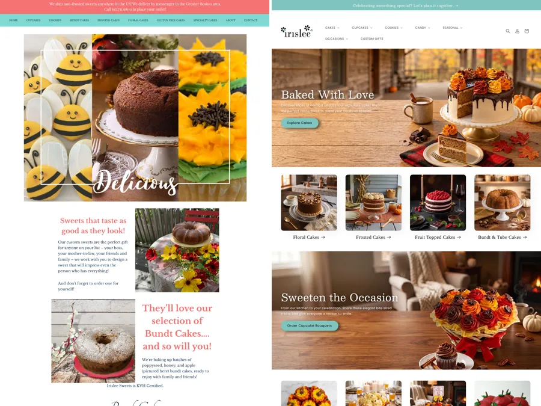

the whole studio ♡Portfolio
Everything in one place
I started in design and grew into building AI systems for businesses. This page shows both sides: the systems that save teams time, and the creative work that taught me how to make things look good and stay consistent. You'll find client work, my own brands and concept projects here.
AI Systems and Automation
Systems I built that take repeat work off a team.


Shopify and Ecommerce
Store growth and a migration for real shops, client SEO audit samples and a concept storefront.

Client workBoston Gift BasketsShopify growth retainer: +70% sales since September

Client workIris Lee: WordPress to ShopifyA partly finished migration, completed: 365 listings live and priced

Client work sampleSEO and Pinterest client audit samplesThree audits recreated from real client work, each with a health score, ranked fixes and a 90 day plan

ConceptVÉLMy concept luxury skin care brand and Shopify storefront
Brand and Design
My own label, brand builds and the design work behind them.

My own brandYumelixirMy own fashion label: 10K+ Instagram followers in year one

Client workReady Study Go AcademyBrand guide, social kit and mock website for a tutoring center

Brand buildBlush Reverie StudioBrand kit, storefront design and Pinterest launch for a pink home decor shop

Brand buildWheat & WoolBrand, site design and Pinterest launch for a wool rug shop
Brand and graphic designLogos, catalogs, websites and ads for clients and my own brands

Fashion and productTech packs, merch, print production at Ruggable and editorial
Marketing and Creative Production
Pinterest ads and feeds, funnels, food and video.

Client workBoutique Bestie SolutionsPinterest ads for boutiques: a 5.6x return on ad spend

Pinterest and socialNew and refreshed Pinterest feeds for seven brands

FunnelsSales funnels, ads and lead magnets, 2018 to 2022

RestaurantsMenus, food photography and websites

VideoShort-form, music visualizers and YouTube edits
let's make your week lighter ♡
Tell me what you'd like to stop doing by hand
Send a short note about your team, your Shopify store or the repeat work you want help with. You don't need to know which service fits yet. I reply within 24 hours on weekdays.